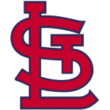

|
|
|  | St. Louis Manager Norrell Named Top Skipper in CBL Wednesday, August 18th, 1926 Manager Khalil Norrell was speaking before a St. Louis fan luncheon when word came down that he'd been awarded the Central Baseball League Manager of the Year. Norrell's face turned to surprise as the club's owner made the hasty announcement. "Wow... how lucky can a guy be? Manage a great bunch of guys... have great fans... have a great season... and now this... life don't get any better than this." St. Louis fans applauded, recognizing how fortunate they were to have Norrell at the helm. Both fans and players in attendance toasted their skipper as they truly enjoyed the day. 1926 was an extra-special season for Norrell as he piloted the St. Louis Jr. Cardinaux to a 29-21 record and a 4th place spot in the standings. A record good enough to win the 1926 Manager of the Year Award. |   |